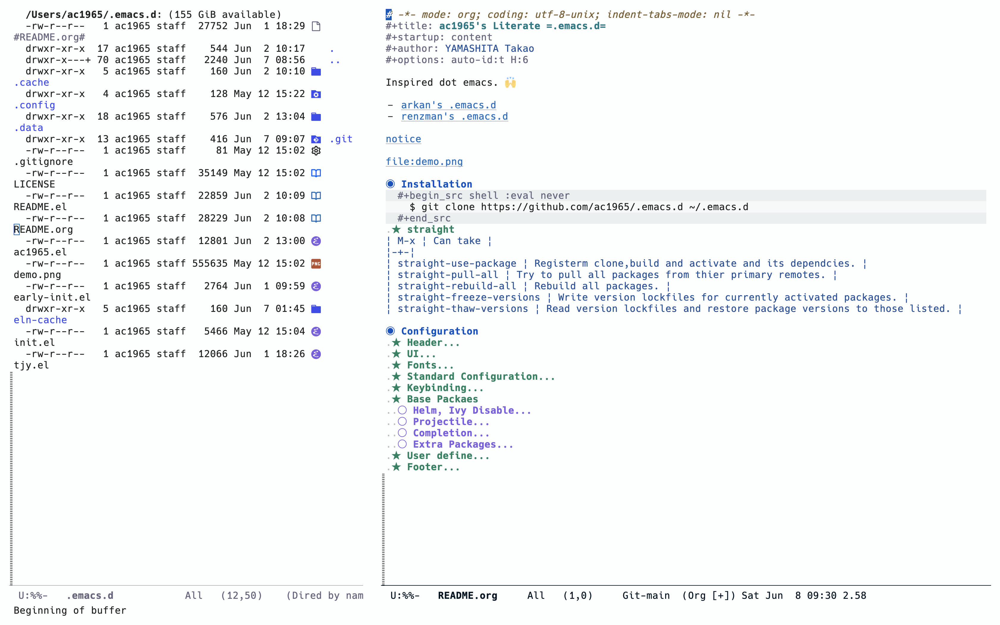

ac1965's emacs
Table of Contents
Inspired dot emacs. :raisedhands:

1. Installation
$ git clone https://github.com/ac1965/.emacs.d ~/.emacs.d
2. Configuration
2.1. Header
;;; README.el --- Emacs.d -*- lexical-binding: t; -*- ;; Copyright (C) 2014-2024 YAMASHITA Takao ;; Author: YAMASHITA Takao <tjy1965@gmail.com> ;; Keywords: emacs.d ;; $Lastupdate: 2024/03/25 21:17:52 $ ;; This file is not part of GNU Emacs. ;; This program is free software; you can redistribute it and/or modify it under ;; the terms of the GNU General Public License as published by the Free Software ;; Foundation; either version 3 of the License, or (at your option) any later ;; version. ;; This program is distributed in the hope that it will be useful, but WITHOUT ;; ANY WARRANTY; without even the implied warranty of MERCHANTABILITY or FITNESS ;; FOR A PARTICULAR PURPOSE. See the GNU General Public License for more ;; details. ;; You should have received a copy of the GNU General Public License along with ;; GNU Emacs; see the file COPYING. If not, write to the Free Software ;; Foundation, Inc., 51 Franklin Street, Fifth Floor, Boston, MA 02110-1301, ;; USA. ;;; Commentary: ;;; License: GPLv3 ;;; Code:
2.2. UI
(leaf UI :config ;; https://github.com/nex3/perspective-el (leaf *display-buffer-base-action :config (customize-set-variable 'display-buffer-base-action '((display-buffer-reuse-window display-buffer-same-window) (reusable-frames . t))) (customize-set-variable 'even-window-sizes nil)) ;; https://protesilaos.com (leaf ef-themes :straight t :config (load-theme 'ef-frost t)) ;; modeline (leaf *modeline :config (leaf minions :straight t :config (minions-mode) (setq minions-mode-line-lighter "[+]")) (setq display-time-interval 1) (setq display-battery-mode t display-time-day-and-date t display-time-24hr-format t) (display-time-mode 1)) ;; spacious-padding (leaf spacious-padding :straight t :config ;; These is the default value, but I keep it here for visiibility. (setq spacious-padding-widths '( :internal-border-width 15 :header-line-width 4 :mode-line-width 6 :tab-width 4 :right-divider-width 30 :scroll-bar-width 4)) ;; Read the doc string of `spacious-padding-subtle-mode-line' as it ;; is very flexible and provides several examples. (setq spacious-padding-subtle-mode-line `( :mode-line-active 'default :mode-line-inactive vertical-border)) (spacious-padding-mode 1) ;; Set a key binding if you need to toggle spacious padding. (define-key global-map (kbd "<f7>") #'spacious-padding-mode)) ;; golden-ratio (leaf golden-ratio :straight t :global-minor-mode t))
2.3. Fonts
| abcdef ghijkl |
| ABCDEF GHIJKL |
| '";:-+ =/\~`? |
| ∞≤≥∏∑∫ ×±⊆⊇ |
| αβγδεζ ηθικλμ |
| ΑΒΓΔΕΖ ΗΘΙΚΛΜ |
| 日本語 の美観 |
| あいう えおか |
| アイウ エオカ |
| ｱｲｳｴｵｶ ｷｸｹｺｻｼ |
| hoge | hogeghoge | age |
|---|---|---|
| 今日もいい天気ですね | お、 | 等幅になった 👍 |
(leaf Fonts :config (setq conf:font-family "Hiragino Kaku Gothic Pro" conf:font-name "Hiragino Kaku Gothic Pro" conf:font-size 16 inhibit-compacting-font-caches t) (defun fc-list () "Generate a list of available fonts using fc-lis" (if (executable-find "fc-list") (split-string (shell-command-to-string "fc-list --format='%{family[0]}\n' | sort | uniq") "\n") (progn (warn "fc-list no disponible en $PATH") nil))) (defun font-exists-p (font) "Check if a font FONT Exists. Code partially taken from https://redd.it/1xe7vr" (let ((font-list (or (font-family-list) (fc-list)))) (if (member font font-list) t nil))) (defun font-pt-to-height (pt) "Transforms a height in PT points to the height of `face-attribute '." ;; the value is 1 / 10pt, therefore 100 would be equivalent to 10pt, etc. (truncate (* pt 10))) (defun font-setup (&optional frame) (cond ((font-exists-p conf:font-name) (set-face-attribute 'default frame :height (font-pt-to-height conf:font-size) :font conf:font-name) (when (featurep 'nerd-icons) (set-fontset-font t 'unicode (font-spec :family "nerd-icons") nil 'append) (set-fontset-font t 'unicode (font-spec :family "file-icons") nil 'append) (set-fontset-font t 'unicode (font-spec :family "Material Icons") nil 'append) (set-fontset-font t 'unicode (font-spec :family "github-octicons") nil 'append) (set-fontset-font t 'unicode (font-spec :family "FontAwesome") nil 'append) (set-fontset-font t 'unicode (font-spec :family "Weather Icons") nil 'append))))) (defun font-setup-frame (frame) "set the font for each new FRAME frame created." (select-frame frame) (when (display-graphic-p) (font-setup frame))) ;; nerd-icons (leaf nerd-icons :straight t :require t) ;; nerd-icons-dired (leaf nerd-icons-dired :straight t :config (add-hook 'dired-mode-hook #'nerd-icons-dired-mode)) (leaf *emoji :config (leaf emojify :straight t :hook (org-mode-hook . emojify-mode))) (if (daemonp) (add-hook 'after-make-frame-functions #'font-setup-frame) (font-setup)))
2.4. Standard Configuration
;; Base Configuration (leaf StandardConfiguration :config (setq inhibit-startup-screen t use-dialog-box nil use-file-dialog nil initial-scratch-message nil large-file-warning-threshold (* 15 1024 1024)) (setq use-short-answers t auto-save-default nil auto-save-list-file-prefix nil backup-inhibited t vc-follow-symlinks t create-lockfiles nil comment-style 'indent default-directory "~/" font-lock-support-mode 'jit-lock-mode frame-resize-pixelwise t major-mode 'text-mode make-backup-files nil ring-bell-function 'ignore confirm-kill-emacs 'y-or-n-p completion-cycle-threshold 3 tab-always-indent 'complete) (setq-default indent-tabs-mode nil tab-width 4 eshell-history-file-name (concat no-littering-var-directory "history") url-configuration-directory (concat no-littering-var-directory "url/") savehist-file (concat no-littering-var-directory "history") frame-title-format (list (user-login-name) "@" (system-name) " %b [%m]")) (when (display-graphic-p) (when (fboundp 'menu-bar-mode) (menu-bar-mode 1)) (when (fboundp 'tool-bar-mode) (tool-bar-mode -1)) (when (fboundp 'scroll-bar-mode) (scroll-bar-mode -1)) (set-frame-parameter nil 'fullscreen 'fullboth)) (set-coding-system-priority 'utf-8) (when (member system-type '(darwin)) (set-terminal-coding-system 'utf-8-unix) (set-keyboard-coding-system 'utf-8-unix) (setq-default default-process-coding-system '(utf-8 . utf-8)) (setq-default buffer-file-coding-system 'utf-8-auto-unix x-select-request-type '(UTF8_STRING COMPOUND_TEXT TEXT STRING))) ;; narrowing (put 'narrow-to-defun 'disabled nil) (put 'narrow-to-page 'disabled nil) (put 'narrow-to-region 'disabled nil) (put 'upcase-region 'disabled nil) (put 'set-goal-column 'disabled nil) (if (fboundp 'normal-erase-is-backspace-mode) (normal-erase-is-backspace-mode 0)) (toggle-indicate-empty-lines) (delete-selection-mode) (blink-cursor-mode -1) (add-hook 'before-save-hook 'delete-trailing-whitespace) (set-default 'truncate-lines t) (line-number-mode +1) (column-number-mode +1) (custom-set-variables '(display-line-numbers-width-start t)) (global-font-lock-mode +1) (global-prettify-symbols-mode) (electric-pair-mode t) (transient-mark-mode 1) (if (fboundp 'normal-erase-is-backspace-mode) (normal-erase-is-backspace-mode 0)) (when (functionp 'mac-auto-ascii-mode) (mac-auto-ascii-mode 1)) ;; editorconfig (leaf editorconfig) ;; visual-line-mode (leaf visual-line-mode :config (global-visual-line-mode t) (diminish 'visual-line-mode nil)) ;; pbcopy (macOS) (leaf pbcopy :straight t :if (memq window-system '(mac ns))) ;; dired-filter (leaf dired-filter :doc "dired-filrter" :straight t) ;; delsel (leaf delsel :doc "delete selection if you insert" :tag "builtin" :global-minor-mode delete-selection-mode) ;; show-paren-mode (leaf paren :doc "highlight matching paren" :tag "builtin" :custom ((show-paren-delay . 0) (show-paren-style . 'expression)) :global-minor-mode show-paren-mode) (leaf simple :doc "basic editing commands for Emacs" :tag "builtin" "internal" :custom ((kill-ring-max . 100) (kill-read-only-ok . t) (kill-whole-line . t) (eval-expression-print-length . nil) (eval-expression-print-level . nil))) (leaf buffer-move :straight t :bind (("C-s-<up>" . buf-move-up) ("C-s-<down>" . buf-move-down) ("C-s-<left>" . buf-move-left) ("C-s-<right>" . buf-move-right) ) ) ;; switch windows (leaf switch-window :straight t :bind (("C-x o" . switch-window) ("C-x 1" . switch-window-then-maximize) ("C-x 2" . switch-window-then-split-below) ("C-x 3" . switch-window-then-split-right) ("C-x 0" . switch-window-then-delete))) ;; midnight (leaf midnight :custom ((clean-buffer-list-delay-general . 1)) :hook (emacs-startup-hook . midnight-mode)) ;; duplicate string no kill-ring (leaf *advices :config (defun my:no-kill-new-duplicate (yank) (setq kill-ring (delete yank kill-ring))) (advice-add 'kill-new :before #'my:no-kill-new-duplicate)) ;; auto-save-buffers-enhanced (leaf auto-save-buffers-enhanced :straight t :bind ("s-b" . auto-save-buffers-enhanced-toggle-activity) :init (setq auto-save-buffers-enhanced-interval 1) (auto-save-buffers-enhanced t)) ;; autorevert (leaf autorevert :custom ((auto-revert-interval . 0.1)) :hook (emacs-startup-hook . global-auto-revert-mode)) ;; abbrev (leaf abbrev :diminish abbrev-mode :pre-setq `((abbrev-file-name . ,(concat no-littering-var-directory "abbrev.el")) (save-abbrevs . 'silently) (default-abbrev-mode . t) (save-abbrevs . t)) :config (unless (file-exists-p abbrev-file-name) (with-temp-buffer (write-file abbrev-file-name))) (when (file-exists-p abbrev-file-name) `` (quietly-read-abbrev-file)) (abbrev-mode t)) ;; recentf (leaf recentf :pre-setq `((recentf-save-file . ,(concat no-littering-var-directory "recentf")) (recentf-exclude . '("\\.?cache" ".cask" "url" "COMMIT_EDITMSG\\'" "bookmarks" "\\.\\(?:gz\\|gif\\|svg\\|png\\|jpe?g\\|bmp\\|xpm\\)$" "^/tmp/" "^/ssh:" "^/sudo:" "^/scp:" "^/scpx:" "^/media/data/org/" "~/.emacs.d/.cache/")) (recentf-max-saved-items . 10) (recentf-max-menu-items . 10) (recentf-keep . '(file-remote-p file-readable-p)) (recentf-auto-cleanup . 'never)) :config (recentf-mode +1)) ;; saveplace (leaf saveplace :pre-setq `(save-place-file . ,(concat no-littering-var-directory "saveplace.el")) :setq-default (save-place . t) :init (save-place-mode)) ;; semantic (leaf semantic :leaf-defer nil :setq `(semanticdb-default-save-directory . ,(concat no-littering-var-directory "semanticdb/")) :init (add-to-list 'semantic-default-submodes 'global-semantic-idle-summary-mode) (semantic-mode 1)) ;; tramp (leaf tramp :pre-setq `((tramp-persistency-file-name . ,(concat no-littering-var-directory "tramp")) (tramp-auto-save-directory . ,(concat no-littering-var-directory "tramp-autosave"))) :setq ((tramp-default-method . "scp") (tramp-encoding-shell . "/bin/bash") (tramp-debug-buffer . t) (tramp-verbose . 10) (tramp-shell-prompt-pattern . "\\(?:^\\|\r\\)[^]#$%>\n]*#?[]#$%>] *\\(^[\\[[0-9;]*[a-zA-Z] *\\)*") (tramp-use-ssh-controlmaster-options . nil) (tramp-password-prompt-regexp . '(concat "^.*" (regexp-opt '("passphrase" "Passphrase" "password" "Password" "Verification code") t) ".*:\0? *")))) ;; server (leaf server :require t :config (unless (server-running-p) (server-start))) ;; expand-region (leaf expand-region :straight t :bind (("C-=" . er/expand-region))) ;; aggressive-indent (leaf aggressive-indent :straight t :global-minor-mode global-aggressive-indent-mode) ;; rg (leaf rg :straight t) ;; dumb-jump (leaf dumb-jump :straight t :after rg :custom ((dumb-jump-force-searcher . 'rg)) :hook ((xref-backend-functions . dumb-jump-xref-activate))) ;; multiple-cursors (leaf multiple-cursors :straight t :bind (("C-S-c C-S-c" . mc/edit-lines) ("C->" . mc/mark-next-like-this) ("C-<" . mc/mark-previous-like-this) ("C-c C-<" . mc/mark-all-like-this))) ;; neotree (leaf neotree :straight t :bind (("<f8>" . neotree-toggle))) ;; tree-sitter (leaf tree-sitter :straight (tree-sitter :type git :host github :repo "emacs-tree-sitter/elisp-tree-sitter" :branch "master") :config (leaf tree-sitter-lang :straight (tree-sitter-langs :type git :host github :repo "emacs-tree-sitter/tree-sitter-langs" :branch "master")) (global-tree-sitter-mode) (add-hook 'tree-sitter-after-on-hook #'tree-sitter-hl-mode) ;; (tree-sitter-require 'tsx) (add-to-list 'tree-sitter-major-mode-language-alist '(typescript-tsx-mode . tsx)) ;; add hi (tree-sitter-hl-add-patterns 'tsx [ ;; styled.div`` (call_expression function: (member_expression object: (identifier) @function.call (.eq? @function.call "styled")) arguments: ((template_string) @property.definition (.offset! @property.definition 0 1 0 -1))) ;; styled(Component)`` (call_expression function: (call_expression function: (identifier) @function.call (.eq? @function.call "styled")) arguments: ((template_string) @property.definition (.offset! @property.definition 0 1 0 -1))) ]) )) ;; tools (defun toggle-linum-lines () ;; ("C-c l" . toggle-linum-lines) "toggle display line number" (interactive) (display-line-numbers-mode (if display-line-numbers-mode -1 1))) (defun toggle-window-split () ;;("s-." . toggle-window-split) (interactive) (if (= (count-windows) 2) (let* ((this-win-buffer (window-buffer)) (next-win-buffer (window-buffer (next-window))) (this-win-edges (window-edges (selected-window))) (next-win-edges (window-edges (next-window))) (this-win-2nd (not (and (<= (car this-win-edges) (car next-win-edges)) (<= (cadr this-win-edges) (cadr next-win-edges))))) (splitter (if (= (car this-win-edges) (car (window-edges (next-window)))) 'split-window-horizontally 'split-window-vertically))) (delete-other-windows) (let ((first-win (selected-window))) (funcall splitter) (if this-win-2nd (other-window 1)) (set-window-buffer (selected-window) this-win-buffer) (set-window-buffer (next-window) next-win-buffer) (select-window first-win) (if this-win-2nd (other-window 1)))))) (defun dired-view-file-other-window () ;; add-hook 'dired-load-hook (interactive) (let ((file (dired-get-file-for-visit))) (if (file-directory-p file) (or (and (cdr dired-subdir-alist) (dired-goto-subdir file)) (dired file)) (view-file-other-window file))))
2.5. Keybinding
https://caiorss.github.io/Emacs-Elisp-Programming/Keybindings.html
(leaf KeyBinding :config (leaf-keys (("C-h" . backward-delete-char) ("C-?" . help) ("C-/" . undo) ("C-c ;" . comment-region) ("C-c :" . uncomment-region) ("C-c o" . find-file) ("C-c k" . kill-buffer-and-window) ("C-c r" . replace-string) ("C-c l" . toggle-linum-lines) ("C-c v g" . magit-status) ("C-c M-r" . replace-regexp) ("C-c M-a" . align-regexp) ("s-n" . find-file-other-frame) ("s-m" . make-frame) ("C-." . other-window) ("s-." . toggle-window-split) ("s-j" . find-file-other-window) ("C-+" . text-scale-increase) ("C--" . text-scale-decrease) ("C-q" . kill-emacs) ("C-c c" . org-capture) ("M-q" . save-buffers-kill-emacs) ("C-s-<up>" . scroll-down-command) ("C-s-<down>" . scroll-up-command) ("s-<up>" . beginning-of-buffer) ("s-<down>" . end-of-buffer) ("s-<left>" . centaur-tabs-backward) ("s-<right>" . centaur-tabs-forward) ("s-<wheel-up>" . scroll-other-window) ("s-<wheel-down>" . scroll-other-window-down) )) ;; which-key (leaf which-key :straight t :global-minor-mode t :config (which-key-setup-side-window-right) (ffap-bindings)) (global-unset-key (kbd "C-s")) (add-hook 'dired-mode-hook (lambda () (define-key dired-mode-map "z" 'dired-view-file-other-window))))
2.6. Base Packaes
2.6.1. Helm, Ivy Disable
(leaf helm :defer-config (helm-mode -1)) (leaf ivy :defer-config (ivy-mode -1))
2.6.2. Projectile
(leaf projectile :straight t :config (projectile-mode +1) (define-key projectile-mode-map (kbd "C-c p") 'projectile-command-map) (setq projectile-switch-project-action #'projectile-vc))
2.6.3. Completion
Vertico with orderless and marginali
- https://github.com/minad/vertico
- https://github.com/oantolin/orderless
- https://github.com/minad/marginalia
(leaf Completion :config ;; corfu (leaf corfu :straight t :init (setq completion-cycle-threshold 3) (setq tab-always-indent 'complete) :global-minor-mode (global-corfu-mode)) ;; vertio (leaf vertico :straight (vertico :files (:defaults "extensions/*") :includes (vertico-directory) ) :init (vertico-mode) (setq vertico-count 15) :config ;; vertico-directory (leaf vertico-directory :straight t :config (define-key vertico-map (kbd "C-l") #'vertico-directory-up) (define-key vertico-map "RET" #'vertico-directory-enter) ;; enter dired (define-key vertico-map "DEL" #'vertico-directory-delete-char) (define-key vertico-map "M-DEL" #'vertico-directory-delete-word) :hook (rfn-eshadow-update-overlay-hook . vertico-directory-tidy))) ;; orderless (leaf orderless :straight t :init (setq completion-styles '(orderless) completion-category-defaults nil completion-category-overrides '((file (styles partial-completion))))) ;; marginalia (leaf marginalia :straight t :global-minor-mode marginalia-mode :after vertico :custom (marginalia-annotators '(marginalia-annotators-heavy marginalia-annotators-light nil)) :init (define-key minibuffer-local-map (kbd "C-M-a") #'marginalia-cycle)) ;; nerd-icons-completion (leaf nerd-icons-completion :straight t :config (nerd-icons-completion-marginalia-setup) (nerd-icons-completion-mode 1)) ;; nerd-icons-corfu (leaf nerd-icons-corfu :straight t :config (add-to-list 'corfu-margin-formatters #'nerd-icons-corfu-formatter)) ;; cape (leaf cape :straight t :config (add-to-list 'completion-at-point-functions #'cape-file) (add-to-list 'completion-at-point-functions #'cape-tex) ;; (add-to-list 'completion-at-point-functions #'cape-dabbrev) (add-to-list 'completion-at-point-functions #'cape-keyword) (add-to-list 'completion-at-point-functions #'cape-abbrev) (add-to-list 'completion-at-point-functions #'cape-ispell) (add-to-list 'completion-at-point-functions #'cape-symbol) ;; Silence the pcomplete capf, no errors or messages! (advice-add 'pcomplete-completions-at-point :around #'cape-wrap-silent) ;; Ensure that pcomplete does not write to the buffer ;; and behaves as a pure `completion-at-point-function'. (advice-add 'pcomplete-completions-at-point :around #'cape-wrap-purify)) ;; kind-icon (leaf kind-icon :straight t :config (setq kind-icon-default-face 'corfu-default) (add-to-list 'corfu-margin-formatters #'kind-icon-margin-formatter)) ;; embark (leaf embark :straight t :bind (("M-." . embark-act) ("C-` d" . embark-dwim) ("C-` b" . embark-bindings) ) :init (setq prefix-help-command #'embark-prefix-help-command) :config (add-to-list 'display-buffer-alist '("\\`\\*Embark Collect \\(Live\\|Completions\\)\\*" nil (window-parameters (mode-line-format . none)))) (leaf embark-consult :straight t :hook (embark-collect-mode . consult-preview-at-point-mode))) ;; affe (leaf affe :straight t :after consult :config (consult-customize affe-grep :preview-key (kbd "M-.")) (defvar affe-orderless-regexp "") (defun affe-orderless-regexp-compiler (input _type) (setq affe-orderless-regexp (orderless-pattern-compiler input)) (cons affe-orderless-regexp (lambda (str) (orderless--highlight affe-orderless-regexp str)))) (setq affe-regexp-compiler #'affe-orderless-regexp-compiler)) ;; consult (leaf consult :straight t :init (setq consult-goto-line-numbers nil) :bind (("C-s l" . consult-line) ("C-s L" . consult-line-multi) ("C-c b" . consult-buffer) ("C-c i" . consult-imenu) ("C-c I" . consult-imenu-multi) ("C-c r" . consult-recent-file) ("C-c g" . consult-goto-line) ("M-g o" . consult-outline) )) (leaf init_hook :preface (defun after-init-hook nil (vertico-mode) (marginalia-mode) (savehist-mode)) :hook ((after-init-hook . after-init-hook))) )
2.6.4. Extra Packages
;; magit (leaf magit :straight t :bind (("C-x g" . magit-status) ("C-x M-g" . magit-dispatch-popup)) :config (defun mu-magit-kill-buffers () "Restore window configuration and kill all Magit buffers." (interactive) (let ((buffers (magit-mode-get-buffers))) (magit-restore-window-configuration) (mapc #'kill-buffer buffers))) (bind-key "q" #'mu-magit-kill-buffers magit-status-mode-map)) ;; markdown-mode (leaf markdown-mode :straight t) ;; yasnippet (leaf yasnippet :straight t :config (yas-global-mode 1))
2.7. User define
(setq user-specific-config (concat my:d user-login-name ".el")) (if (file-exists-p user-specific-config) (load user-specific-config)) (if (file-exists-p custom-file) (load custom-file))
2.8. Footer
(provide 'README) ;;; README.el ends here
i